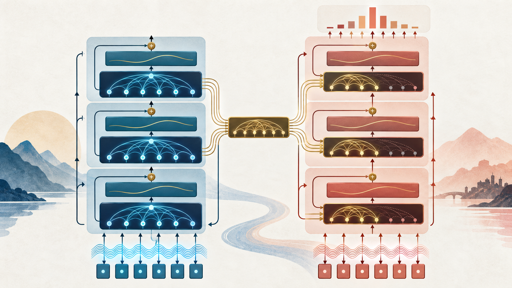
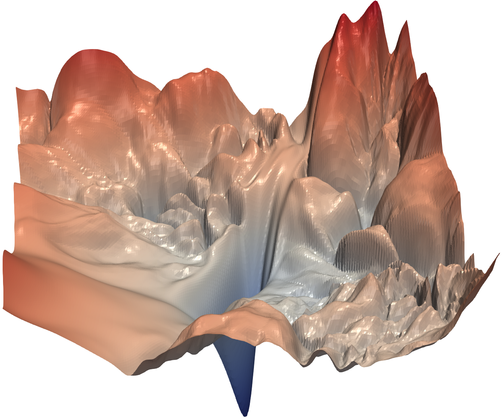
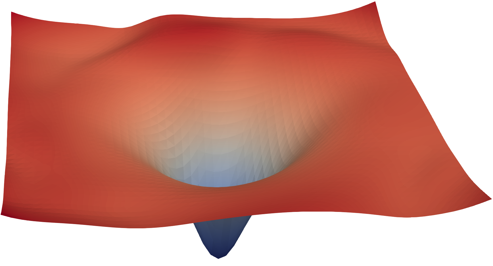

Building the complete block
2026-09-21

POSITION
Give tokens an order
TRANSFORM
Process features deeply
STABILIZE
Build safe depth
ENCODE
Read in both directions
DECODE
Generate without peeking
CONNECT
Retrieve source memory
reorder inputs with \(P\)\(operatorname{Attn}(PX)=P,operatorname{Attn}(X)\)outputs are merely reordered
Attention sees which tokens are present and how they match—but it needs another signal to know where each token occurs.
A token embedding tells us what the token is—not where it occurs.
\[ \boxed{\mathbf{z}_i=\mathbf{e}(\text{token}_i)+\mathbf{p}_i} \]
The vectors have the same dimension, so addition preserves one vector per token and changes none of the attention machinery.
KEEP THE WORD FIXED · MOVE ITS POSITION \(\mathbf e_{\text{cats}}=[1.0,\ 0.0]\)
CATS AT POSITION 1
\[ \begin{aligned} \mathbf z_1 &= \mathbf e_{\text{cats}}+\mathbf p_1\\ &= [1.0,0.0]+[0.1,0.0]\\ &= \boxed{[1.1,0.0]} \end{aligned} \]
same identity≠different input
CATS AT POSITION 3
\[ \begin{aligned} \mathbf z_3 &= \mathbf e_{\text{cats}}+\mathbf p_3\\ &= [1.0,0.0]+[-0.1,0.1]\\ &= \boxed{[0.9,0.1]} \end{aligned} \]
We know how to inject position. But what information should the vectors \(\mathbf p_1,\mathbf p_2,\ldots\) contain?
FIXED SINUSOIDAL ENCODING
\[ \begin{aligned} PE(pos,2k) &=\sin\!\left(\frac{pos}{10000^{2k/d}}\right)\\[0.45em] PE(pos,2k+1) &=\cos\!\left(\frac{pos}{10000^{2k/d}}\right) \end{aligned} \]
pos selects the token location k selects a coordinate pair d is the embedding dimension
Each position receives a distinctive pattern across dimensions; nearby positions have related patterns, while different frequencies expose distance at several scales.
OTHER POSITION STRATEGIESlearned absolute embeddingsrelative position representations or biasesrotary position embeddings (RoPE)linear attention biases (ALiBi)
What small neural network can transform every token independently between attention layers?
ATTENTION
Who should communicate with whom?
FEED-FORWARD NETWORK
How should the retrieved features be transformed?
\[ \operatorname{FFN}(x)=W_2\,\operatorname{ReLU}(W_1x+b_1)+b_2 \]
THE MAIN IDEA
One block learns one round of communication followed by one round of feature transformation.
COMMUNICATEMULTI-HEAD ATTENTION ↓ TRANSFORMFEED-FORWARD NETWORK
COMMUNICATE AGAINMULTI-HEAD ATTENTION ↓ TRANSFORM AGAINFEED-FORWARD NETWORK
The computation is clear—but what prevents information from degrading as this stack becomes deep?
NEXT-TOKEN TRAINING EXAMPLE
Each row is the token asking a question. Each column is a token it could inspect.
| query ↓ / key → | The | cat | sat | down |
|---|---|---|---|---|
| The | ✓ | −∞ | −∞ | −∞ |
| cat | ✓ | ✓ | −∞ | −∞ |
| sat | ✓ | ✓ | ✓ | −∞ |
| down | ✓ | ✓ | ✓ | ✓ |
The triangular mask lets every position train in parallel—without revealing the answer it is supposed to predict.
1 · COMPUTE SCORES
\[S=\frac{QK^\top}{\sqrt{d_k}}\]
One score for every query–key pair.
2 · ADD THE MASK
\[ M_{ij}=\begin{cases} 0 & j\le i\\ -\infty & j>i \end{cases} \]
Future scores become \(-\infty\).
3 · NORMALIZE
\[A=\operatorname{softmax}(S+M)\]
Because \(e^{-\infty}=0\), blocked positions receive exactly zero attention.
Implementation check: apply the mask to the scores—not to the probabilities—and do it before softmax.
OUR SELF-ATTENTION BUILDING BLOCK
One more requirement for depth: preserve a direct path for both information and gradients.
\[x \longrightarrow x + \operatorname{Sublayer}(x)\]
This head finds who served. But should the same probability distribution also encode what was served?
THE IDENTITY PATH
\[x^{(\ell)}=x^{(\ell-1)}+F(x^{(\ell-1)})\]
\[\frac{\partial x^{(\ell)}}{\partial x^{(\ell-1)}}=I+\frac{\partial F}{\partial x^{(\ell-1)}}\]


ONE TOKEN · \(x\in\mathbb{R}^{d}\)
\[\mu=\frac{1}{d}\sum_{j=1}^{d}x_j\]
\[\sigma^2=\frac{1}{d}\sum_{j=1}^{d}(x_j-\mu)^2\]
\[\widehat{x}_j=\frac{x_j-\mu}{\sqrt{\sigma^2+\epsilon}}\]
\[y_j=\gamma_j\widehat{x}_j+\beta_j\]
\(\gamma,\beta\in\mathbb{R}^{d}\) are learned.
Statistics are computed across the feature axis of each token independently.
PAUSE For \(x=[1,\;2,\;3]\), with \(\gamma=\mathbf{1}\) and \(\beta=\mathbf{0}\), find \(\mu\), \(\sigma^2\), and \(\operatorname{LN}(x)\). Ignore \(\epsilon\).
BEFORE
\([1,\;2,\;3]\)
AFTER
\([-1.22,\;0,\;1.22]\)
mean \(\approx 0\)variance \(\approx 1\)
The learned vectors \(\gamma\) and \(\beta\) can then rescale and shift each feature; normalization does not force every layer to remain standardized.
FROM THE EQUATIONS
import torch
from torch import nn
def layer_norm(x, gamma, beta, eps=1e-5):
mean = x.mean(dim=-1, keepdim=True)
var = x.var(
dim=-1, keepdim=True, unbiased=False
)
x_hat = (x - mean) * torch.rsqrt(var + eps)
return gamma * x_hat + beta
gamma = nn.Parameter(torch.ones(d_model))
beta = nn.Parameter(torch.zeros(d_model))
y = layer_norm(x, gamma, beta)\(X: B\times T\times d\)normalize dim=-1\(Y: B\times T\times d\)
nn.LayerNorm(d_model) normalizes over the final dimension, uses the biased variance estimator (unbiased=False), and applies learnable elementwise affine parameters by default. PyTorch LayerNorm documentation.
POST-NORM · ORIGINAL TRANSFORMER
\[\operatorname{LayerNorm}\!\left(x+\operatorname{Sublayer}(x)\right)\]
Residuals preserve a route through depth; LayerNorm controls the representation carried along that route.
THE COMPLETE DECODER
A Transformer decoder is a stack of \(L\) decoder blocks.
Every block contains:
The same architecture repeats, but each layer has its own learned parameters.
Linear projection and softmax convert the final state into next-token probabilities.
\[Z^{(\ell)}=\operatorname{DecoderBlock}_{\ell}(Z^{(\ell-1)})\]
SOURCE · ENGLISH
Should the encoder hide later English words?
No. Its job is to understand the entire source sentence.
TARGET · FRENCH
May the decoder inspect words after its current position?
No—that would reveal the answer.
ENCODER full bidirectional source context≠DECODER causal target context
Input: \(X\in\mathbb{R}^{T\times d}\)\(A=\operatorname{softmax}\!\left(QK^\top/\sqrt{d_k}\right)\)\(A\in\mathbb{R}^{T\times T}\) is fully available
THE ENCODER STACK
A Transformer encoder is a stack of \(L\) encoder blocks.
Every block contains:
Every source position can attend to all source positions.
Linear projection and softmax convert the final contextual states into task probabilities.
\[X^{(\ell)}=\operatorname{EncoderBlock}_{\ell}(X^{(\ell-1)})\]
ONE ATTENTION RULE · TWO REPRESENTATIONS
At target position \(t\), the decoder state asks a question about the encoded source:
\[Q=Z_{\text{dec}}W_Q\] \[K=H_{\text{enc}}W_K,\qquad V=H_{\text{enc}}W_V\] \[\operatorname{CrossAttn}(Z,H)=\operatorname{softmax}\!\left(\frac{QK^\top}{\sqrt{d_k}}\right)V\]
| Queries | Keys & values | |
|---|---|---|
| Self-attention | same sequence | same sequence |
| Cross-attention | decoder | encoder memory |
The decoder decides which source words are useful now.
Bidirectional self-attention builds contextual representations.
Causal self-attention processes only the available prefix.
Cross-attention connects source understanding to generation.
The task determines which tokens may communicate and therefore which Transformer family fits.
WMT 2014 · TEST BLEU ↑
The original Transformer improved translation quality while removing recurrence.
EN → DE28.4BLEU
More than +2 BLEU over the previous best reported systems, including ensembles.
| System | EN→DE | EN→FR | Training cost |
|---|---|---|---|
| ConvS2S ensemble | 26.36 | 41.29 | — |
| GNMT ensemble | 26.30 | 41.16 | — |
| Transformer (base) | 27.3 | 38.1 | 12 h · 8 GPUs |
| Transformer (big) | 28.4 | 41.8 | 3.5 d · 8 GPUs |
| Benchmark | Previous best | BERT | Gain |
|---|---|---|---|
| GLUE average | 72.8 | 80.5 | +7.7 |
| SQuAD 1.1 F1 | 91.7 | 93.2 | +1.5 |
| SWAG accuracy | 59.9 | 86.3 | +26.4 |
Pretrain once; fine-tune the same bidirectional encoder for classification and question answering.
| Validation metric | Baseline | T5-Base |
|---|---|---|
| GLUE | 83.28 | 85.97 |
| SQuAD | 80.88 | 85.44 |
| SuperGLUE | 71.36 | 75.64 |
| CNN/DM | 19.24 | 20.90 |
The same encoder–decoder interface spans understanding, QA, and summarization.
EVERY QUERY SCORES EVERY KEY
For a sequence of length \(T\):
\[S=\frac{QK^\top}{\sqrt{d_k}}\in\mathbb{R}^{T\times T}\] \[\text{time}=\mathcal O(T^2d),\qquad \text{scores}=T^2\]
Doubling the context length creates four times as many attention scores.
How can we preserve long-range communication without materializing every pair?
How can hiding part of a sentence teach an encoder to understand language?
CS 351 · The Transformer Architecture